Nam Định là một vùng đất nằm ở phía Đông Nam của đồng bằng Bắc bộ. Với nhiều phong cảnh đẹp cuốn hút. Nếu bạn muốn đi du lịch Nam Định mà chưa biết nên đi đâu, làm gì, ăn đâu thì kinh nghiệm du lịch Nam Định sau đây sẽ là những thông tin hữu ích cho các bạn đấy.
I. Giới Thiệu Về Tỉnh Nam Định.
Xưa kia là quê hương gốc gác của các vua nhà Trần, một triều đại oanh liệt đã ba lần đánh thắng quân Nguyên Mông xâm lượt vào thế kỷ 13. Nơi phát xuất dòng tộc Trần hoàng gia là làng Tức Mặc, cách trung tâm thành phố Nam Định ngày nay 3km.
Nam Định cũng là quê hương của một số nhà thơ nổi tiếng như Trần Tế Xương, Nguyễn Bính. Ngày xưa, nhà Trần cho xây ở đây các cung điện làm nơi nghỉ ngơi cho vua chúa và hoàng thân tôn thất khi đã rút khỏi việc nước. Có một ngôi chùa cổ nổi tiếng với ngọn tháp xây dựng từ năm 1305, gồm 13 tầng cao 21m, trải qua bảy thế kỷ nay vẫn còn nguyên vẹn là Phổ Minh cổ tự.
Tp Nam Định cách thủ đô Hà Nội 90km. Tỉnh có bờ biển dài 12km, nối tiếp với hai cửa biển và hai dòng sông lớn là sông Đáy và sông Hồng. Bờ biển có 5 cửa sông, nhiều bãi cát rộng lớn. Hai cảng lớn và cảng sông Nam Định và cảng biển Hải Thịnh. Nam Định có tầm quan trọng về các lĩnh vực quân sự, kinh tế, chính trị, văn hoá và du lịch.
II. Nên Đi Du Lịch Nam Định Vào Thời Điểm Nào ?

Nam Định có khí hậu ôn hoà, nhiều cảnh đẹp phù hợp với nhiều sở thích của du khách vì vậy bạn có thể đến đây bất cứ thời điểm nào trong năm.
Bên cạnh đó, nếu du khách thích khám phá lịch sử dân tộc và hoà mình vào lễ hội đặc sắc như khai ấn đền Trần hay chợ Viềng, có thể đến Nam Định vào dịp đầu năm. Lúc đó ban có thể chứng kiến một khung cảnh náo nhiệt, đặc sắc không như vẻ trầm mặc đời thường.
III. Hướng Dẫn Đi Đến Nam Định.
Là một tỉnh đang phát triển, nằm cách thủ đô Hà Nội chỉ 90km, bạn có thể đi đến bằng nhiều phương tiện khác nhau như khách tại tp Hồ Chí Minh, Cần Thơ, Đà Nẵng… có thể đi máy bay đến Hà Nội rồi tiếp tục đi thuê xe ô tô, tàu hoả, xe máy hay bắt xe buýt để đến Nam Định.
1. Tàu Hoả.
Hiện vé tàu lửa Tuyến Hà Nội – Nam Định chỉ tầm 40k – 130k/vé, du khách ở thành phố lớn ở phía nam có thể đi đến Nam Định bằng tàu hoả. Để mua vé bạn có thể ra ga tàu lửa khu vực hoặc mua trực tuyến trên website dsvn.vn
2. Xe Khách.
Phần lớn khách du lich Nam Định đến từ Hà Nội. Tại đây bạn có thể đi xe khách của những hãng xe uy tín như Anh Kiên, Nam Tiến hay Chỉnh Luân khởi hành từ Hà Nội đến Nam Thái hay Yên Trị tỉnh Nam Định
Khách ở tp Hồ Chí Minh thì có thể đến bến xe Miền Đông hoặc ngã Tư Ga và mua vé xe Hoàng Long, Viết Lưu hay Trường Khoa để đến Nam Định, giá dao động 600k – 800k/vé.
3. Xe Máy:
Là phương tiện được nhiều bạn phượt thủ yêu thích. Bạn có thể theo lộ trình sau để đến Nam Định
Hà Nội – đi đường Giải Phóng đến ngã ba Pháp Vân – rẽ ra cao tốc – đi tầm 32km tới Cầu Giẽ – đi QL 1A cũ tầm 16 – 17km hết thành phố Phủ Lý – rẽ trái theo QL 21A (theo bảng chỉ dẫn) – đi tiếp 30km đến Nam Định.
Lưu ý: Hiện một số đoạn đường tại Nam Định, đặt biệt là thị trấn Đồng Văn (cầu Giẽ 12km) có bắn tốc độ. Khi đến Phủ Lý và đoạn Trạm thu phú Mỹ Lộc (qua Phủ Lý 14km).
Ngoài ra du khách các nơi khách có thể theo một số tuyến sau:
– Từ Ninh Bình theo quốc lộ 1A rẽ vào đường 10. Con đường này dẫn tới thành phố Nam Định và cũng là con đường qua Thái Bình.
– Từ Hà Nam xuống theo đường 21.
IV. Nên Ở Đâu Khi Du Lịch Nam Định.
Với du khách muốn khám phá trọn vẹn tỉnh Nam Định thì công việc đầu tiên khi đến đây là tìm địa điểm trú chân nghỉ ngơi, khách sạn, nhà nghỉ thích hợp. Theo kinh nghiệm của Du Lịch Việt, bạn nên chọn một số khách sạn, nhà nghỉ trên đường Trần Hưng Đạo, Trần phú, Lê Hồng phong,.. một số con đường tại trung tâm thành phố hoặc khu vực bãi biển Thịnh Long để tiện cho việc đi lại, thăm quan. Dưới đây là một số khách sạn chất lượng, bạn có thể tham khảo.
1. Huy Anh Resort
Là một khu nghỉ dưỡng chất lượng tại bãi biển Thịnh long, Nam Định. Huy Anh được nhiều du khách yêu thích bởi có một khuôn viên rộng, thoáng mát, gần bãi biển Thịnh long, du khách có thể thoải mái ngâm mình trong làn nước, thưởng ngoạn cảnh biển đẹp lúc bình minh.
Giá phòng Huy Anh Resport tầm 700k/đêm.
2. Vị Hoàng Hotel.
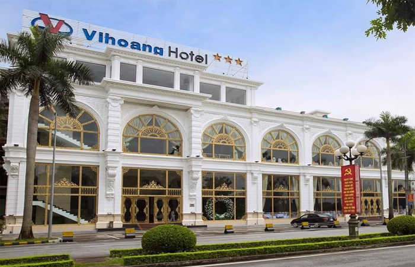
Toạ lạc tại số 153 Nguyễn Du, Tp Nam Định, với nhiều tiện ích, nhân viên phục vụ chu đáo nên thu hút nhiều khách du lịch Nam Định dừng chân. khách sạn luôn mang lại sự ấm áp cho du khách. Giá thuê phòng chỉ tầm 500k/đêm.
3. Phú Mỹ Hotel:
Là một khách sạn danh tiếng, là địa điểm được nhiều bạn trẻ dừng chân. Phú Mỹ được thiết kế một cách trang nhã, lịch sự, được nhiều công ty du lịch đặt phòng cho khách đi tour.
Giá phòng khách sạn chỉ tầm 500k/đêm.
V. Hướng Dẫn Đi Lại Tại Nam Định.
Hiện phương tiện di chuyển chủ yếu của du khách khi đến Nam Định là xe máy, ô tô, bạn có thể liên hệ với lễ tân tại khách sạn nơi bạn đang cư trú để thuê với giá tầm 120k – 250k tuỳ loại xe. Bạn chỉ cần chuẩn bị cmnd và bằng lái xe.
Taxi: Khi đi du lịch Nam Định cùng với gia đình, bạn có thể gọi xe taxi của một số hãng uy tín sau:
+ Hoàng Sa – Điện Thoại : 0228.6.285.285
+ Mai Linh – Điện Thoại : 0228.6.25.25.25
+ Mai Linh tuyến huyện – Điện thoại : 0228.3.76.76.76
+ Đức Phương – Điện thoại : 0228.3.676.676
+ Đò Quan – Điện thoại : 0228.3.68.68.68
+ Taxi Vip – Điện thoại : 0228.3.638.638
VI. Địa Điểm Du Lịch Nam Định Không Thể Bỏ Qua.
Trước hành trình bạn cần định hướng những nơi cần thăm quan, và thời gian du lịch để chuyến đi được thuận lợi, vui vẻ. Dưới đây là một số địa danh du lịch bạn không nên bỏ qua.
1. Bãi Biển Thịnh Long.
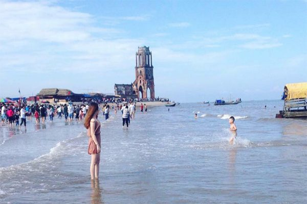
Theo đường 21, từ thành phố Nam Định đến thị trấn Hải Thịnh thuộc huyện Hải Hậu, có bãi biển Thịnh Long. Nơi đây có bờ cát mịn, bờ thoải dài hàng mấy km. Nước biển có độ mặn cao, sóng lớn, thu hút nhiều du khách trong mùa hè oi bức. Vẫn còn nhiều vẻ đẹp nguyên sơ, môi trường chưa bị ô nhiễm. Trên bờ có nhiều hàng phi lao dài hút tầm mắt. Đây là một bãi tắm ngày càng thu hút nhiều du khách tới thư giãn và nghỉ dưỡng.
2. Nhà Thờ Công Giáo.
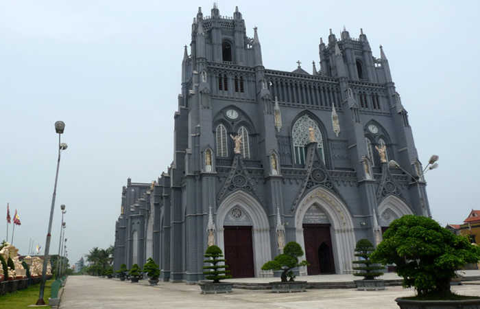
Nam Định từ xưa đã được nhiều người biết đến là nơi truyền đạo Công giáo nên có nhiều công trình kiến trúc nhà thờ Công giáo độc đáo. Những nhà thờ này mở cửa từ lúc sáng sớm, đến 22h đêm mới đóng cửa. Bạn có thể cùng bạn bè, người thân đi thăm quan, check – in thoải mái. Một số nhà thờ Công giáo đẹp như nhà thờ Đổ Hải Lý tại huyện Hải Hậu, toà giám mục Bùi Chu ở xã Xuân Ngọc hay nhà thờ lớn Nam Định tại trung tâm số 16 Hai Bà Trưng, Trần Hưng Đạo.
3. Vườn Quốc Gia Xuân Thuỷ.
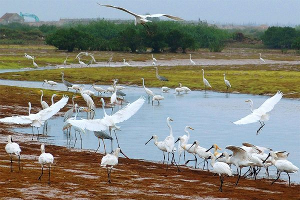
Bạn là một người yêu mến thiên nhiên, thích du ngoạn cảnh đẹp rừng núi thì đây chính là sự lựa chọn đúng. Vườn quốc gia Xuân Thuỷ là một khu bảo tồn thiên nhiên được UNESCO công nhận là khu dự trữ sinh quyển với hệ thống động thực vật phong phú.
Nằm tại xã Giao Thiện, huyện Giao Thuỷ, tỉnh Nam Định. Khi thăm quan vườn quốc gia này du khách sẽ cảm thấy tâm hồn thư thái, không khí trong lành, bạn sẽ có dịp hoà mình vào thiên nhiên tươi đẹp. Để chuyến thăm quan vườn quốc gia được thuận lợi, bạn nên có hướng dẫn viên du lịch, bạn có thể thuê với giá 300k nhé!
4. Di Tích Đền Trần.
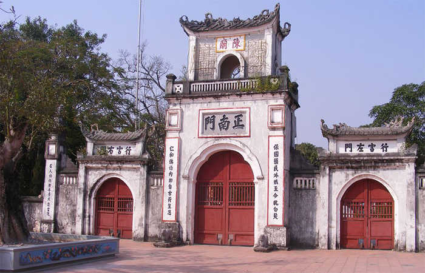
Là một di tích lịch sử nổi tiếng, từng một thời hưng thịnh dưới thời nhà Trần. Di tích nằm tại QL 10, tp Nam Định, bên trong thờ 14 vị vua đời nhà Trần và những vị quan lại có công lao to lớn trong xây dựng, giữ gìn đất nước.
Nếu bạn là người thích náo nhiệt có thể đến đây vào đầu năm hoặc tầm tháng 8, lúc này nơi đây có diễn ra lễ hội độc đáo. Giá tiền gửi xe nơi đây dao động từ 4k – 70k tuỳ loại xe nhé.
5. Khu Bảo Tồn Thiên Nhiên Giao Thuỷ.
Ở Nam Định có môi trường sinh thái ngập nước là khu bảo tồn thiên nhiên ở huyện Giao Thuỷ, chỉ cách Hà Nội 160km, trải dài qua Cồn Lu, Cồn Ngạn và Cồn Xanh, chổ cửa sông Hồng đổ ra biển, sản phẩm của quá trình bồi tụ phù sa từ hàng ngàn năm qua.
Vùng cửa sông Hồng này mỗi năm lấn ra biển từ 120 đến 150m do phù sa bồi đắp. Trong hơn 12.000ha đầm nước lợ có 4000ha đã được quy hoạch nuôi trồng thuỷ sản, khu vực còn lại với thảm thực vật và ruộng chừng 7000ha là khu quản lý theo công ước Ramsar đầu tiên của Việt Nam.
Tại khu bảo tồn này có hàng nàn con chim di trú với rất nhiều giống khác nhau. Rừng sú Vẹt Giao Thuỷ, ngoài các loài chim còn có mèo biển, cáo biển, rái cá. Dưới nước có các loại tôm, cá, cua, rắn, ngao, sò… là những nguồn lương thực phong phú cho các loài chim. Vào mùa hoa sú vẹt hương thơm toả mát, là dịp hội tụ của các đàn ong mật.
6. Chùa Cổ Lễ.
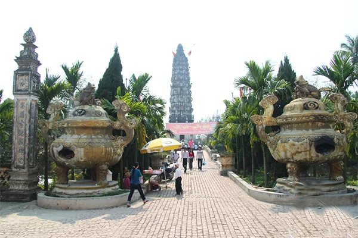
Là một công trình di tích cổ nhất tại Nam Định. Nơi đây còn lưu giữ nhiều di vật có giá trị lịch sử. Ngôi chùa Cổ Lễ bằng đá, diện tích 625m2, toà tháp cổ 12 tầng, đại hồng chung và trống đồng đời nhà Lý.
Khi đến thị trấn Cổ Lễ, Nam Định, du khách được dịp chiêm ngưỡng công trình chùa cổ linh thiêng này. Đặc biệt là những lễ hội đặc sắc được diễn ra vào dịp rằm tháng 9. Có dịp du lịch Nam Định bạn hãy tìm hiểu thêm nhé.
7. Di Tích Phủ Dầy.
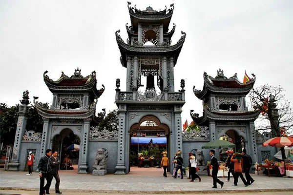
Là một di tích cổ nổi tiếng, còn được bà con địa phương gọi là lăng bà chúa Liễu, do bên trong di tích thờ bà chúa Liễu Hạnh, là một trong những tứ đại bất tử của nước ta.
Công trình di tích Phủ Dầy nằm giữa một khoảng không gian rộng, hài hoà, không khí trang nghiêm, là một điểm lý tưởng cho những ai muốn tìm cảm giác hoài cổ thanh tịnh và bình yên. Nếu du khách muốn sự náo nhiệt thì nên đến Phủ Dầy vào rằm tháng 3, lúc này diễn ra lễ hội Phủ Dầy đặc sắc thu hút nhiều du khách thập phương.
8. Hồ Vị Xuyên.
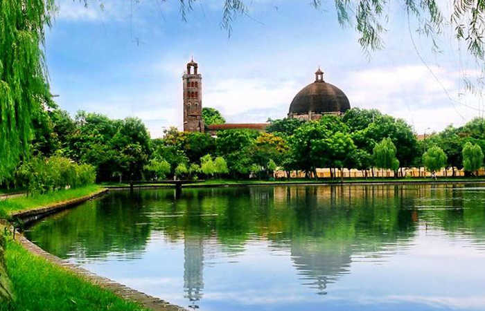
Là một hồ nước đẹp, làn nước trong xanh, vốn là dấu tích của con sông Vị Hoàng khi xưa, nay hồ Vị Xuyên là một phần của công viên nằm giữa nhiều công trình lịch sử.
Khi bạn muốn tận hưởng bầu không khí trong lành thoáng đãng tại thành phố Nam Định thì hãy đi ra đường Nguyễn Du, đối diện nhà văn hoá 3/2, thăm quan hồ Vị Xuyên nhé. Khu vực mở cửa từ sáng đến tối nên bạn có thể thoả mái thăm quan.
VII. Nên Ăn Gì Khi Du Lịch Nam Định.
Với nhiều khách du lịch Nam Định, được thưởng thức những món ăn ngon là điều nhiều người mong muốn. Dưới đây là những món ăn được nhiều du khách đánh giá cao.
1. Phở Bò.
Là món ăn mà hầu hết du khách đều thích thú khi được thưởng thức ở Nam Định. Nhờ vào cách thức chế biến của đầu bếp địa phương có những sự khác biệt với món phở nơi khác.
Sự tinh tuý trong món phở Bò Nam Định là ở nước dùng, sợi phỏ mềm, dai, nên phở luôn là món ăn được nhiều người quan tâm. Để được thưởng thức món phở tại Nam Định bạn có thể ghé trong số các quán như: phở cụ Tăng phố Hàng Tiện hoặc phở Đán Phố Hai Bà Trưng hay quán phở Xuyến ngõ Văn Nhân để thưởng thức nha.
2. Nem Thính.
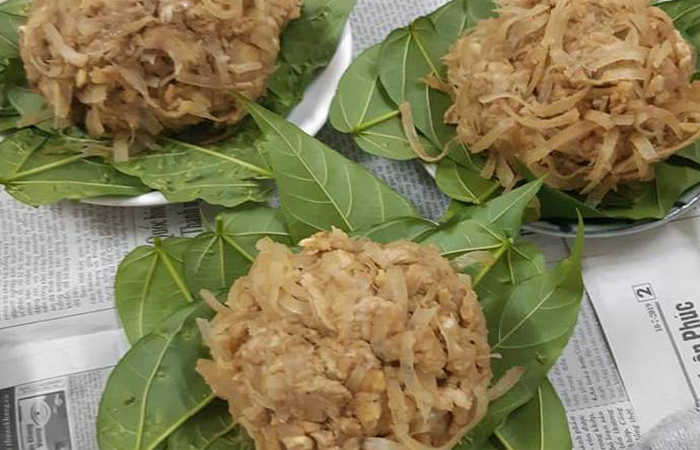
Với những nguyên liệu đơn giản như tai lợn, bì lợn được cắt nhỏ và bỏ thêm gạo rang giã nát trộn vào nhau vo thành từng nắm, ăn với lá sung, đinh lăng. Nhờ việc tẩm ướp đặc trưng, món ăn trở nên hấp dẫn, ngon lành.
Khi ăn món Nem Thính bạn nên ăn với lá sung, đinh lăng sẽ tăng phần hấp dẫn. Hiện quán ăn bán Nem Thính ngon nhất tại Nam Định được nhiều du khách ghé là tại Giao Thuỷ và đây được xem là địa bàn nem thính đấy.
3. Xôi xíu.
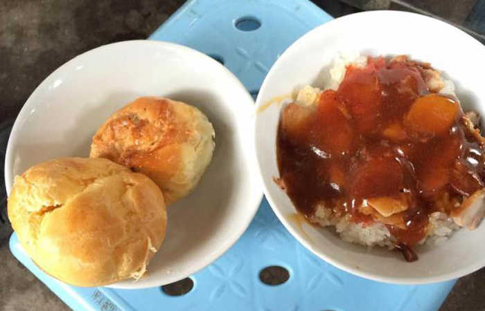
Là món ăn được chế biến giản đơn, xôi trắng ăn với thịt xá xíu mềm, nóng và lạp xưởng hoà quyện nước sốt được chế biến đặc trưng khiến món ăn trở nên hấp dẫn.
Tuy món ăn ngon nhưng giá khá mềm chỉ tầm 15k/hộp. Để thưởng thức xôi xíu bạn có thể ghé đường Hàng Sắt hay đường Hoàng Văn Thụ để trải nghiệm nhé.
4. Bánh Xíu Mại.
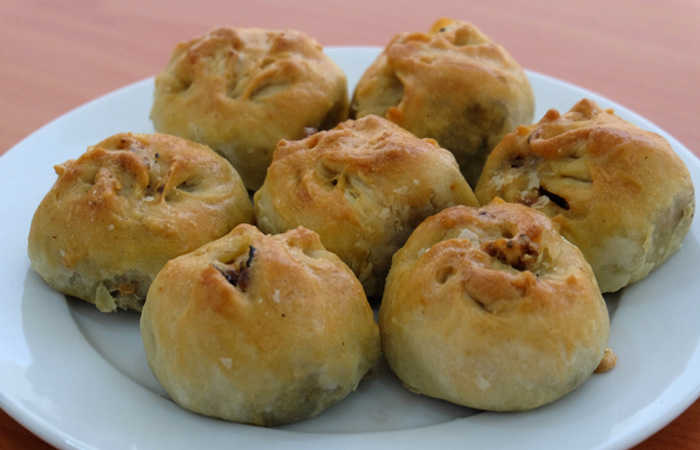
Trông vẻ bên ngoài của nó như là bánh bao gồm có nhân thịt, xá xíu, mộc nhĩ trộn với mỡ lợn tạo và một số gia vị tạo hương thơm hấp dẫn.
Để thưởng thức món bánh Xíu Mại, bạn hãy ghé đường Hoàng Văn Thụ, nơi có nhiều cộng đồng người Hoa sẽ có những hàng quán bán bánh khá ngon.
5. Bánh gai

Khi đi du lịch Nam Định mà chưa ăn được món bánh gai thì quả là điều thiếu sót. Bánh có vẻ ngoài đen nhẻm nhưng bên trong là cả một tinh tuý ẩm thực Nam Định. Khi cắn một miếng thì hương vị ngọt, dẻo đến tận kẻ răng.
Để thưởng thức bánh Gai thì bạn có thể ghé đường Trần Hưng Đạo, quán bánh gai bà Thi. Giá chỉ tầm 6k – 11k/bánh.
Ngoài ra bạn có thể thưởng thức nhiều món ăn ngon tại một số địa chỉ sau:
+Phở 10 Lý Quốc Sư – Bến Ngự tại địa chỉ: 6 Bến Ngự, Tp. Nam Định, Nam Định
+Bún Chả Nam Thành tại địa chỉ: 44 Hai Bà Trưng, P. Trần Hưng Đạo, Tp. Nam Định, Nam Định
+ Nhà hàng Cửa Đông Plaza tại địa chỉ: 158 Trần Hưng Đạo – Quận Hoàn Kiếm – Nam Định
+ Phở Nam Hương tại địa chỉ: 42 Hai Bà Trưng, P. Trần Hưng Đạo, Tp. Nam Định, Nam Định
+ Phở Bò Cụ Tăng phố Hàng Tiện
+ Quán nhậu Trung Chim tại địa chỉ: 369 Trần Nhân Tông, Tp. Nam Định, Nam Định
+ Bún ốc Trường Chinh tại địa chỉ: Trường Chinh, Tp. Nam Định, Nam Định
+ Nhà hàng Thuỷ Tạ tại địa chỉ: Hồ Vị Xuyên – Thành phố Nam Định – Nam Định